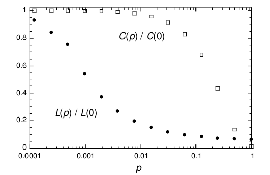

Figure 1. Watts-Strogatz Model.
A network is said to be a small-world network if its mean shortest path between any pair of nodes grows logarithmically with the size of nodes.
Mathematically, a network $G$ with $n$ nodes is a small-world network if its average distance $L$ satisfies:
\begin{equation}
L \propto \log(n).
\end{equation}
Small-world properties are found in many real-world phenomena. For example, an letter delivering experiment had be conducted to find out that there are no more than about 6 steps between each pair of people in the world which is known as six degrees separation.
ER model is a simple model for generating random graphs. To generate a random graph given $n$ nodes, each possible edge is selected with a probability $p$. This generating mechanism is known as $G(n, p)$. A popular variant of ER model is $G(n, M)$ which select exactly $M$ edges from edge set of uniform distribution.
It has been proved that if $p \gg \ln(n) / n$ then a graph generated by model $G(n, p)$ will almost surely be connected. Purely random graphs exhibit small-world property along with a small clustering coefficient which is not consistent with small-world networks in real world whose clustering coefficient is high.
Watts-Strogatz model was proposed to generate small-world networks with small-world property and also with high clustering coefficient. To achieve this goal, Watts-Strogatz model employ a different random graph generating mechanism $G(n, k, p)$ that starts from a regular graph with $n$ nodes and $k$ degrees and rewires each edge with a probability $p$. Graphs generated with $p=1$ have no difference from random graphs generated by $G(n, nk/2)$. To guarantee that a random graph will be connected, $k\gg\ln(n)$ is required. Regular graphs $G(n, k, p=0)$ are large-world networks whose average distance $L \propto n$ but have high clustering coefficient $C$. In contrast, random graphs $G(n, k, p=1)$ are poorly clustered, small-world networks whose average distance $L \propto \log(n)$.
However, Watts and Strogatz found out that, compared to $G(n, k, p=0)$, $L$ drops dramatically and $C$ changes a little with a small rewiring probability $p$. In this way, a small-world network with high clustering coefficient can be attained. Figure 1 shows the relationships between regular graphs, small-world network and random graphs and Figure 2 shows how $L$ and $C$ change with rewiring probability $p$.
Under Watts-Strogatz model, given an actual network $G$ with $n$ nodes and $m$ edges and a random graph $G(n, m)$, small-world property in the acutal network can be identified if \begin{equation} L{actual} \approx L{random} \wedge C{actual} \gg C{random} \end{equation}
Figure 1. Watts-Strogatz Model.

Figure 2. $p$'s effections on $L$ and $C$.
A network is said to be scale-free if its degree distribution follows a power law distribution, more specifically the probability of a node being connected to $k$ neighbor nodes $P(k)$ satisfies \begin{equation} P(k) \sim k^{-\gamma} \end{equation} where $3>\gamma>2$.
To generate a scale-free network Barabási–Albert (BA) model which simulates growing process of networks was proposed. In BA model, we first start with a small number($m0) of nodes, at every time step a new node $v$ and $m(m \le m0)$ edges which connect $v$ to original $m$ nodes are added. The probability that $v$ is connected to original node $i$
\begin{equation}
P(i) = ki / \sum{j} kj
\end{equation}
where $ki$ denotes the degree of node $i$ in the existing system. Over long time periods the distribution of degree will reach a stationary
\begin{equation}
P(k) = \frac{2m^3}{k^3}.
\end{equation}
BA model captures growth and preferential attachment which play an important role in network development and are not captured by Watts-Strogatz model.
In all three model mentioned above, generating mechanisms are designed to generate random graphs possessing properties discovered in real small-world network such as logarithmically growing average distance, high clustering coefficient and power law distribution of degree. ER model generates edges randomly to attain small-world property, WS model rewires edges to short cuts by a small probability in regular graph to attain small-world property preserving high clustering coefficient and BA model simulates network development process to attain power law distribution of degree. Inspired from this pattern, we may discover properties which are found in real-world phenomena but not in random graphs generated by conventional models and propose a new model generating graphs possessing new properties.
In the mean time, properties in graphs discovered by conventional models are valuable for tasks performing in small-world networks such as information diffusion, community discovery, collective classification and so on. Utilizing properties in small-world networks in other tasks is worthy academic study.